Oakridge Centre — Fire Protection
Mixed-Use • Multi-GC Delivery • Vancouver, BC
Overview
Client: DIVISION 15 | PITT MEADOWS
Gisborne has been awarded significant fire protection work on the Oakridge Development — one of the largest mixed‑use projects in Canadian history. The 4.5 million sq ft redevelopment includes commercial, residential, and office space, 14 residential towers, a community centre, office space, and a new transit concourse. I worked hard on fire protection for 6 towers, NEO building and concourse.
Stakeholder structure: GCs (EllisDon, Peak Construction, → MEP Contractors (Division 15 Mechanical Ltd., Pitt Meadows Plumbing & Mechanical System Ltd.) → Subcontractor (Gisborne) Fire Protection Delivery.
- Towers 1 & 2 — Completed under Kanin Construction with full wet and dry sprinkler systems installation.
- Towers 3, 4, 6 & 7 — Initially under EllisDon, with Towers 3 & 4 later transferred to Peak Construction; 70% of fire protection scope completed at time of transfer.
- North-East Office Building — VDC + sprinkler system delivery (approx. 10% completed).
- Transit Plaza to Oakridge–41st Station — Pricing and scope refinement under negotiation.
- Full integration of fire protection into BIM/VDC workflows to avoid clashes with MEP and structural systems.
- Coordination of equipment procurement, insulation and heat trace installation, and firestopping across all active areas.
Challenge
The project faced a significant budget shortfall due to delays across all towers, ranging from 12 to 16 months. At the same time, a large volume of design changes was being issued with limited change-control oversight, resulting in uncontrolled cost exposure and financial uncertainty.
Solution
Conducted meticulous reviews of delay events and design revisions to identify root causes and quantify impacts. Prepared detailed change requests, led negotiations, and secured formal approvals. Streamlined the change-management workflow by establishing clear documentation, tracking, and accountability, ensuring all impacts were properly captured and submitted.
Result
Achieved up to a 15% improvement in key economic indicators by obtaining timely Change Order approvals, eliminating uncontrolled financial exposure, and restoring cost clarity for the fire‑protection scope across all six towers.
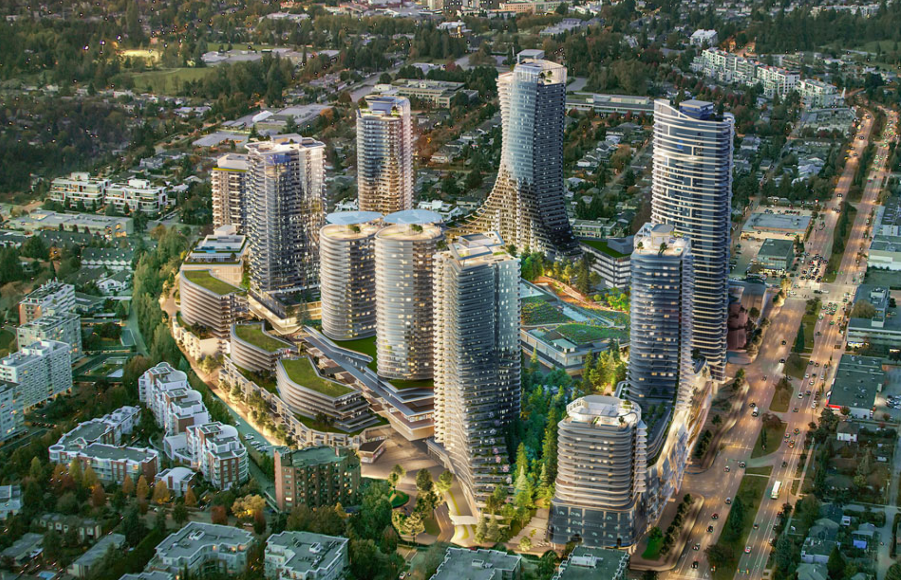Project Facts
My Responsibilities
- Managed fire protection delivery across all towers, including wet/dry systems, insulation, heat trace, and firestopping.
- Led change management: analyzed IFC revisions, prepared RFIs/Change Requests, and coordinated with GCs, consultants, and MEP trades.
- Prepared shop drawings and managed monthly payment draws.
- Supported VDC modeling and clash detection.
- Ensured compliance with Safety, QA/QC, and site-specific requirements.
- Reviewed Change Order logs bi-weekly and followed up on outstanding items.
- Defined scope, managed subcontractor invitations, and handled client submittals and clarifications.
- Reviewed Agreements and subcontracts for scope, pricing, and terms prior to execution.
- Secured timely Change Order approvals and ensured integration into invoicing and payment follow-ups.
- Tracked productivity and reviewed performance indicators with project personnel.
- Oversaw job-cost adjustments with the Project Coordinator and maintained cost logs.
Gallery
 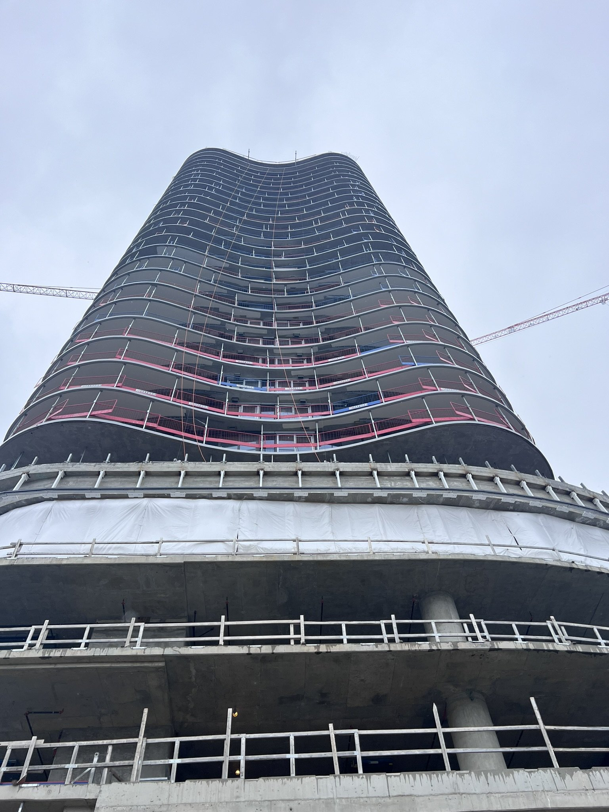
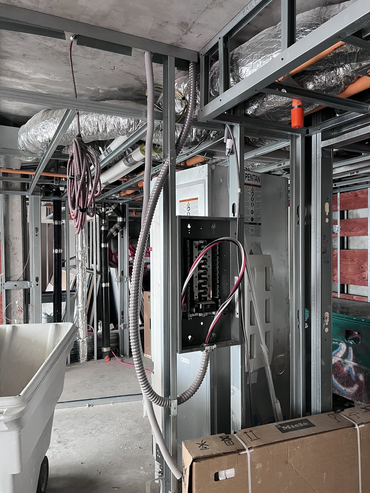
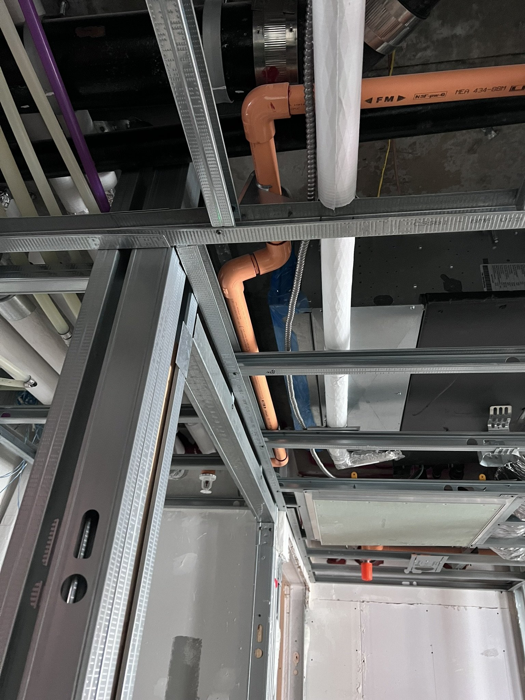
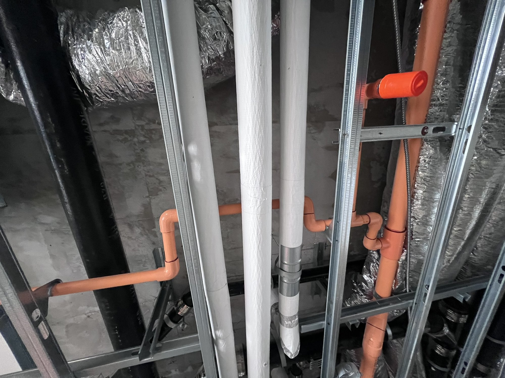
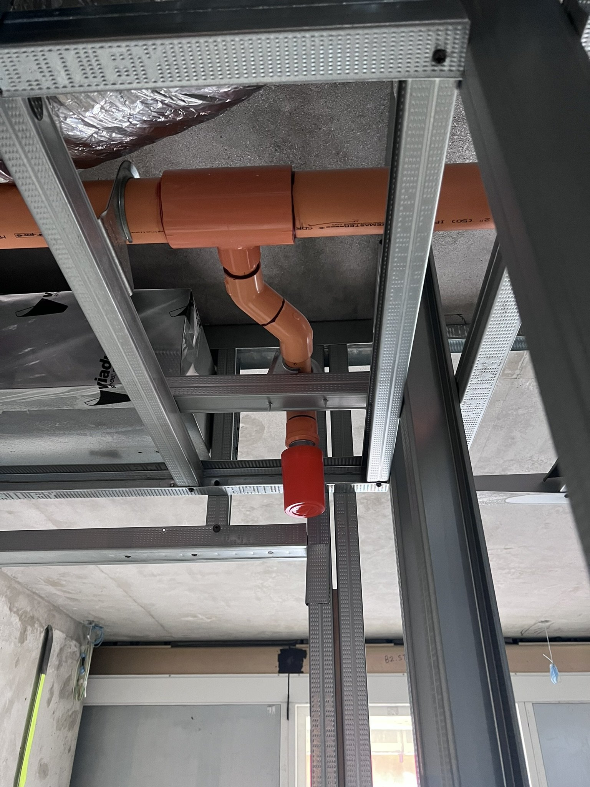
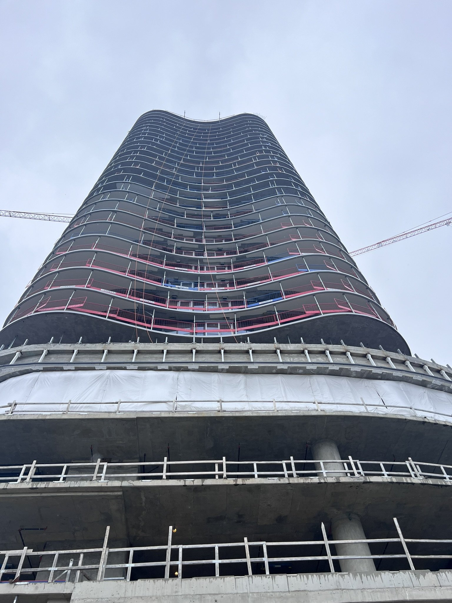
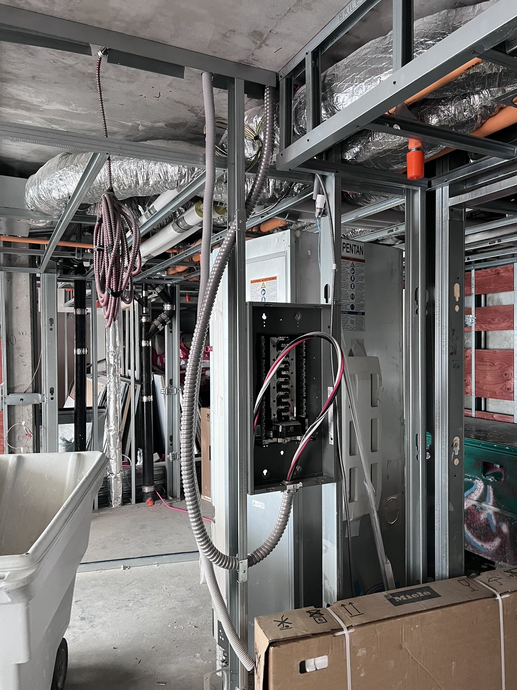
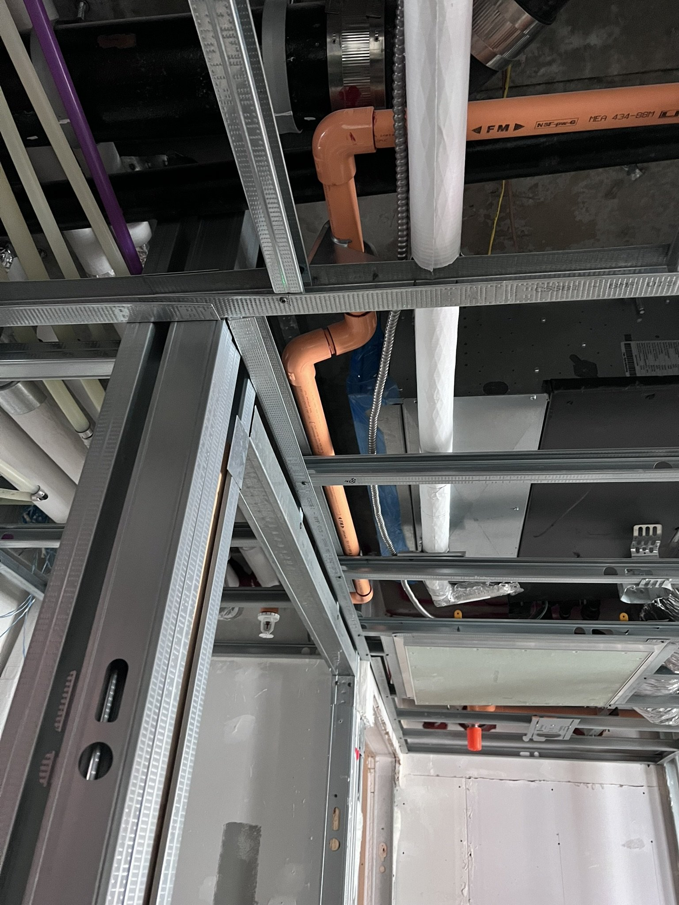
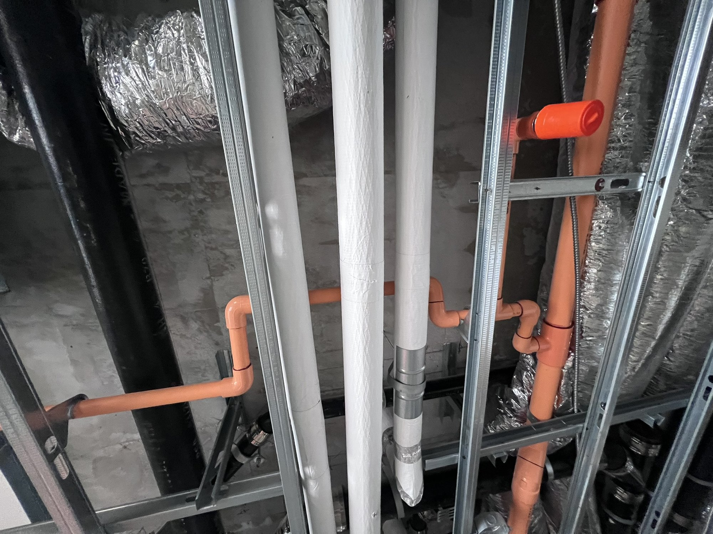
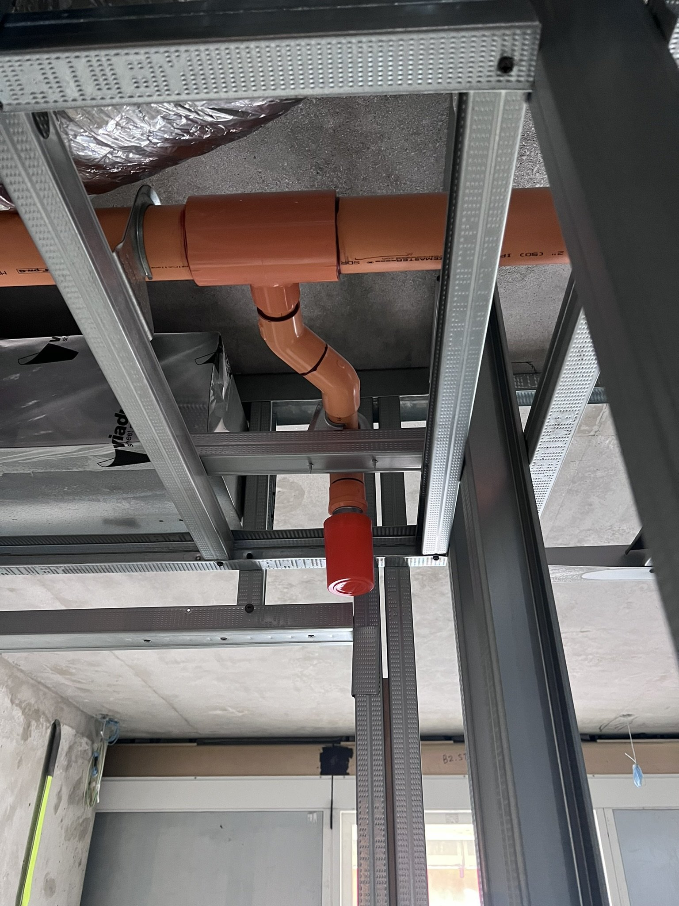